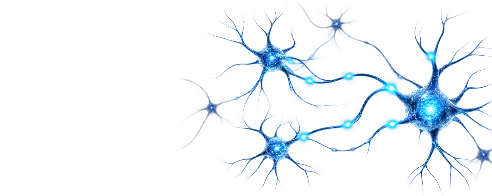

Bài thuyết trình về SNN
Thông tin thời gian
trong mạng nơ-ron xung
Tìm hiểu hai paper 2026: MD-Mixer và DMP-SNN
Đặng Thị Ngọc Thảo · Đặng Nguyễn Hữu Huy
Dự kiến 14–16 phút
Nội dung
Chúng ta sẽ đi qua ba phần
1. Từ ANN đến SNNNeuron xung hoạt động ra sao và vì sao thông tin theo thời gian trở thành một bài toán riêng.
2. MD-MixerLấy đặc trưng ở các thời điểm cũ rồi đưa vào spiking attention.
3. DMP-SNNNén lịch sử vào trạng thái nhớ nhỏ, sau đó đối chiếu hai phương pháp.
Với mỗi paper, thứ tự trình bày là vấn đề → hướng giải quyết → cơ chế → kết quả thực nghiệm.
02 / 20
Kiến thức nền · ANN → SNN
ANN truyền giá trị liên tục, SNN truyền sự kiện xung
ANN thông thườngĐầu vàoGiá trị thực, ví dụ cường độ pixel
→NeuronTính tổng có trọng số rồi kích hoạt
→Đầu raGiá trị liên tục
Trong triển khai dense, mô hình tính nhiều phép nhân và cộng ở mỗi lượt xử lý.
SNNĐầu vàoSpike theo timestep
→NeuronTích lũy điện thế màng
→Đầu raSpike 0 hoặc 1
Neuron chỉ phát tín hiệu khi đạt ngưỡng. Nếu spike thưa và phần cứng hỗ trợ, phép tính có thể tiết kiệm hơn.
SNN thêm trục thời gian: cùng một đầu vào có thể tạo chuỗi spike ở nhiều timestep. Khả năng tiết kiệm năng lượng không tự động có ở mọi thiết bị.
Nền tảng: Guo, Huang & Ma, Frontiers in Neuroscience 2023.
03 / 20
Kiến thức nền · Neuron LIF
Điện thế màng giúp neuron SNN nhớ một phần quá khứ
Spike đếnTạo dòng đầu vào It
→Tích lũyVt giữ một phần Vt−1
→So ngưỡngVượt θ thì phát spike
→Sau spikeĐiện thế được reset theo quy tắc neuron
Ví dụ trực giácMột spike riêng lẻ có thể chưa đủ làm neuron phát xung. Nhiều spike đến gần nhau cộng dồn, khiến điện thế vượt ngưỡng.
Vt ≈ βVt−1 + It
Hệ số β biểu thị phần trạng thái cũ còn lại sau một bước. Qua nhiều bước, ảnh hưởng cũ thường nhỏ dần.
Đây là dạng đơn giản để giải thích; mô hình LIF đầy đủ còn có ngưỡng và reset.
LIF đã có bộ nhớ thời gian, nhưng một trạng thái suy giảm có thể khó giữ chi tiết quan trọng từ rất lâu trước đó.
Nền tảng LIF: Guo, Huang & Ma 2023; mô hình thời gian trong Shi et al. 2026 và Sun et al. 2026.
04 / 20
Bài toán chung
Một sự kiện cũ có thể quyết định dự đoán hiện tại
t=1
tín hiệu At=2t=3t=4t=5t=6t=7t=8
quyết định
Ví dụ minh họa: ở t=8, mô hình cần biết tín hiệu A từng xuất hiện tại t=1. Nếu ảnh hưởng của A mờ dần, quyết định cuối có thể sai.
Hai vị trí cần cải thiệnTrong attention: truy cập trực tiếp đặc trưng của các thời điểm cũ để so với hiện tại.
Trong neuron: duy trì tóm tắt lịch sử dài mà không lưu toàn bộ chuỗi spike.
MD-Mixer giải bài toán thứ nhất. DMP-SNN giải bài toán thứ hai. Đây là hai vị trí khác nhau trong hệ thống SNN.
05 / 20
MD-Mixer · Vấn đề
Attention ở timestep hiện tại thiếu đường lấy lịch sử trực tiếp
Spiking self-attention thông thườngXtĐặc trưng ở thời điểm t
→Qt, Kt, VtTạo từ đầu vào hiện tại
→AttentiontTương tác giữa các token
Attention này giỏi kết hợp token trong cùng timestep. Thông tin từ các timestep trước vẫn có thể đi qua trạng thái neuron, nhưng chưa có đường chọn t−1, t−3 hay t−7 một cách tường minh.
Hệ quả khi cần tín hiệu cũỞ t=8, nếu chi tiết hữu ích xuất hiện ở t=2, attention không thể lấy trực tiếp đặc trưng X2 chỉ bằng K8, V8.
Đây là giới hạn của đường truy cập trực tiếp, không có nghĩa mô hình baseline hoàn toàn không nhớ.
Câu hỏi của paper: làm thế nào đưa đặc trưng từ nhiều thời điểm trước vào attention hiện tại?
Shi et al., CVPR 2026, Introduction và Section 3.
06 / 20
MD-Mixer · Hướng giải quyết
Gắn nhiều “đường trễ” vào đặc trưng trước attention
t−7t−6t−5t−4t−3t−2t−1t
Các mốc được tô chỉ minh họa. Trong paper, độ trễ của mỗi nhánh được học từ dữ liệu, có thể khác nhau giữa các channel.
Ý tưởng cốt lõi- Giữ đặc trưng của các timestep gần đây trong buffer.
- Mỗi nhánh lấy một thời điểm cũ theo delay đã học.
- Trộn các nhánh rồi dùng kết quả để tạo K và V.
Query vẫn hỏi về hiện tại; Key và Value mang thêm ngữ cảnh quá khứ để attention đối chiếu.
Shi et al., CVPR 2026, Figure 2 và Eq. 7–11. Timeline là ví dụ minh họa, không phải delay học được trong thí nghiệm.
07 / 20
MD-Mixer · Pipeline chi tiết
Từ chuỗi X đến attention có thông tin quá khứ
Đường tạo Query tại tXtĐặc trưng hiện tại
→Linear + BN + SNTạo Qt
BufferXt, Xt−1, …
→K nhánh delayMỗi channel lấy K vị trí quá khứ
→Trộn αCộng có trọng số các nhánh
→BN + SNTạo Kt, Vt
Qt + Kt + VtSpiking self-attention
→ZtOutput tại timestep t
MD-Mixer trộn theo thời gian trong từng channel; attention sau đó kết hợp token. Lịch sử đi vào K/V trước khi tính attention.
Shi et al., CVPR 2026, Eq. 7–11. BN = batch normalization; SN = spiking neuron.
08 / 20
MD-Mixer · Học delay
Delay là số nguyên: học mềm trước, chọn cứng sau
1. Khởi tạoMỗi channel/nhánh có tâm delay d*
→2. TrainingPhân bố mềm lên các delay nguyên lân cận
→3. AnnealingGiảm nhiệt độ để phân bố hẹp dần
→4. InferenceDùng delay rời rạc đã học
Ví dụ minh họa, không phải kết quả paperNếu d* nằm giữa 3 và 4, lúc đầu cả Xt−3 và Xt−4 có thể góp phần. Cuối training, mô hình nghiêng về một vị trí cụ thể.
Đọc Xt−d bằng chỉ số nguyên là thao tác khó lấy gradient theo d. Phân bố mềm tạo đường cho gradient cập nhật d*.
Delay học theo tập dữ liệu và được cố định khi inference; phương pháp gốc chưa đổi delay riêng cho từng input.
Cơ chế này trả lời lấy quá khứ lúc nào. Trọng số α trả lời mỗi nhánh đóng góp bao nhiêu.
Shi et al., CVPR 2026, Section 3.3 và Eq. 12–14.
09 / 20
MD-Mixer · Kết quả thực nghiệm
Accuracy tăng và delay học tốt hơn delay ngẫu nhiên
Ablation: s-CIFAR10, SDT-V1| Cấu hình | Accuracy |
|---|
| Baseline | 83.65% |
| Random delay | 84.39% |
| Learned MD-Mixer | 86.65% |
Random delay giúp một ít; delay học từ dữ liệu tạo mức tăng lớn hơn.
Hai bài toán khác| Bài toán / backbone | Baseline | MD-Mixer |
|---|
| ImageNet / SDT-V2 8-512, T=4, 224² | 79.49% | 80.02% |
| s-CIFAR100 / QKFormer, T=32 | 55.99% | 64.33% |
Các hàng thuộc protocol khác nhau; chỉ so sánh baseline và MD-Mixer trong từng hàng.
Paper ủng hộ lợi ích của delay học được trên các backbone và dataset đã thử. Chưa có phép đo đầy đủ về buffer, latency và energy khi triển khai thực tế.
Shi et al., CVPR 2026, Tables 1, 4 và 5. Accuracy là phần trăm theo từng thí nghiệm.
10 / 20
DMP-SNN · Vấn đề
Chuỗi 784 bước đặt áp lực lên bộ nhớ LIF
Ví dụ S-MNISTPixel đầuThông tin xuất hiện sớm
→784 timestepĐọc lần lượt từng pixel
→Phân loạiCần tổng hợp toàn bộ chuỗi
Trong LIF, ảnh hưởng từ nhiều bước trước thường suy giảm. Muốn giữ lâu hơn, có thể dùng kết nối hồi tiếp dày hoặc buffer delay dài, nhưng cả hai làm chi phí bộ nhớ tăng.
Chi phí theo trực giácRecurrence: thêm kết nối giữa nhiều neuron.
Delay dài: phải giữ sự kiện chờ đến lượt sử dụng.
Chỉ dùng LIF: nhẹ hơn nhưng có thể quên tín hiệu xa.
DMP-SNN tìm một đường giữa: giữ ngữ cảnh dài trong trạng thái nhỏ mà vẫn giữ phản ứng nhanh theo spike.
Sun et al., Nature Machine Intelligence 2026, Introduction và Figure 1. S-MNIST đọc ảnh 28×28 thành 784 bước.
11 / 20
DMP-SNN · Hướng giải quyết
Tách phản ứng tức thời và trí nhớ chậm thành hai đường
Fast spike pathSpike hiện tại đi qua trọng số feedforward, tạo dòng Ifast. Đường này phản ứng với sự kiện vừa xảy ra.
Slow memory pathCùng spike được nén để cập nhật vector nhớ m. State này tóm tắt lịch sử rồi tạo dòng Imemory.
Hai đường gặp nhau ở neuronut ≈ βut−1 + Ifast,t + Imemory,t
Memory cung cấp ngữ cảnh cho neuron đang xử lý spike hiện tại; nó không tự thay thế toàn bộ đường feedforward.
Ý tưởng của DMP là memory nhỏ dùng chung trong layer điều biến nhiều neuron, thay vì lưu nguyên chuỗi spike hoặc thêm hồi tiếp dày.
Sun et al., Nature Machine Intelligence 2026, Figure 1 và Methods.
12 / 20
DMP-SNN · Pipeline chi tiết
Một timestep có hai nhánh song song rồi hội tụ ở neuron
1. Cùng nhận spike st từ layer trước2. Fast pathWfst tạo dòng Ifast từ spike hiện tại.
3–5. Slow pathNén st thành scalar xt, cập nhật mt = Āmt−1 + B̄xt, rồi chiếu Wmmt thành Imemory.
6. Tích hợpIfast + Imemory cùng cập nhật điện thế màng
→7. Phát spikeNeuron vượt ngưỡng gửi spike sang layer tiếp theo
Fast path không chờ memory path xử lý xong mới nhận st. Hai kết quả được cộng khi neuron cập nhật.
State m chỉ có d chiều nhỏ hơn số neuron N. Nó nén ngữ cảnh của layer và chiếu trở lại N neuron khi cần.
Sun et al., Nature Machine Intelligence 2026, Figure 1 và Methods. Các biểu thức được giản lược để trình bày.
13 / 20
DMP-SNN · Ví dụ trực giác
Slow state giữ dấu vết cũ, fast path đọc sự kiện mới
t=1
spike At=2t=3t=4t=5t=6t=7t=8
spike B
Fast path tại t=8Nhìn trực tiếp spike B, tạo phản ứng tức thời.
Slow state tại t=8Đã cập nhật qua nhiều timestep nên còn tóm tắt ngữ cảnh liên quan đến A.
Khi cộng hai dòngNeuron ở t=8 có thể phản ứng khác nhau với cùng spike B, tùy ngữ cảnh A trước đó.
Ví dụ A/B minh họa cơ chế, không phải thí nghiệm cụ thể trong paper. State nén không bảo đảm giữ nguyên mọi chi tiết cũ.
DMP không lưu từng spike quá khứ. Nó lưu một bản tóm tắt động, đổi thông tin chi tiết lấy bộ nhớ gọn hơn.
14 / 20
DMP-SNN · Kết quả thuật toán
Memory chậm giúp rõ trên bài toán chuỗi dài
S-MNIST · 784 bước| Mô hình | Tham số | Accuracy |
|---|
| FSNN | 42K | 59.00% |
| DSNN | 43K | 88.79% |
| DMP-SNN II | 73K | 99.20% |
PS-MNIST · 784 bước, pixel bị hoán vị| Mô hình | Tham số | Accuracy |
|---|
| FSNN | 42K | 11.30% |
| DSNN | 43K | 72.06% |
| DMP-SNN II | 102K | 96.65% |
Kết quả ủng hộ slow memory trên hai chuỗi dài. Số tham số khác nhau, nên đây không phải so sánh hiệu quả ở cùng một ngân sách.
Sun et al., Nature Machine Intelligence 2026, Figure 2. FSNN = feedforward SNN; DSNN = delay-based SNN.
15 / 20
DMP-SNN · Kiểm tra cơ chế
Bỏ fast path thì slow state không đủ để dự đoán
Ablation trên S-MNIST99.20% → 10.00%
DMP-SNN II đầy đủ đạt 99.20%. Khi bỏ đường spike nhanh, accuracy rơi về 10%, xấp xỉ đoán ngẫu nhiên trong bài toán 10 lớp.
Điều ablation cho thấyMemory có ích khi bổ sung ngữ cảnh cho phản ứng nhanh. Nó không đủ thay thế luồng tín hiệu trực tiếp từ spike đến neuron.
Paper cũng thử trên PS-MNIST: biến thể không fast path đạt 10.00%, trong khi DMP-SNN II đầy đủ đạt 96.65%.
Tên “dual memory pathways” nhấn mạnh sự phối hợp của hai đường, không phải chỉ thêm một state rồi bỏ đường spike.
Sun et al., Nature Machine Intelligence 2026, Extended Data Table 2.
16 / 20
DMP-SNN · Đồng thiết kế phần cứng
Hai kiểu dữ liệu cần hai dataflow khác nhau
Spike path: thưaChỉ đọc trọng số ứng với spike đang hoạt động, tránh thao tác trên nhiều đầu vào bằng 0.
Memory path: dense nhưng nhỏGiữ tổng đang tính gần neuron để giảm đọc ghi state từ SRAM.
Paper còn gộp leak, spike input và memory input trong cùng tiến trình cập nhật neuron.
Trong setup đánh giá của paper>4×
throughput so với Loihi2 delay implementation
>5×
energy efficiency so với Loihi2 và DenRAM đã chuẩn hóa
Các con số đến từ post-layout simulation 22FDX, tập trung inference single-core trên SHD. Một số baseline lấy từ paper khác rồi chuẩn hóa; chưa phải đo chip DMP thực tế.
Sun et al., Nature Machine Intelligence 2026, Figure 4 và Hardware evaluation.
17 / 20
Đối chiếu hai paper
Hai phương pháp đặt bộ nhớ ở hai vị trí khác nhau
| Câu hỏi | MD-Mixer | DMP-SNN |
|---|
| Lịch sử được giữ ở đâu? | Feature trong buffer tại các delay đã học | Vector slow state nén lịch sử của layer |
| Đưa lịch sử vào đâu? | K và V trước spiking attention | Dòng điện bổ sung vào neuron |
| Điểm mạnh đã đo | Accuracy trên nhiều Spiking Transformer; learned delay vượt random delay | Chuỗi dài, ablation fast path và đánh giá phần cứng |
| Chi phí còn cần đo | Buffer, latency, năng lượng streaming | Scale multi-core và phép đo trên chip thực |
Không thể lấy accuracy của hai paper để xếp hạng trực tiếp: dataset, backbone, điểm can thiệp và protocol khác nhau.
Tổng hợp từ Shi et al., CVPR 2026 và Sun et al., Nature Machine Intelligence 2026.
18 / 20
Kết luận
SNN cần dùng lịch sử
đúng chỗ và đúng chi phí
MD-Mixer cho attention truy cập trực tiếp nhiều thời điểm cũ. DMP-SNN mang ngữ cảnh dài vào neuron qua một state nhỏ.
Cả hai đều cải thiện kết quả trong các bài toán đã thử, nhưng chi phí hệ thống và khả năng mở rộng vẫn cần đánh giá theo từng ứng dụng.
Thông điệp chính: “SNN có thời gian” chưa đủ. Cách tổ chức và truy cập thông tin thời gian quyết định mô hình sử dụng lịch sử hiệu quả ra sao.
19 / 20
Hỏi đáp
Cảm ơn thầy cô
và các bạn
Đặng Thị Ngọc Thảo · Đặng Nguyễn Hữu Huy